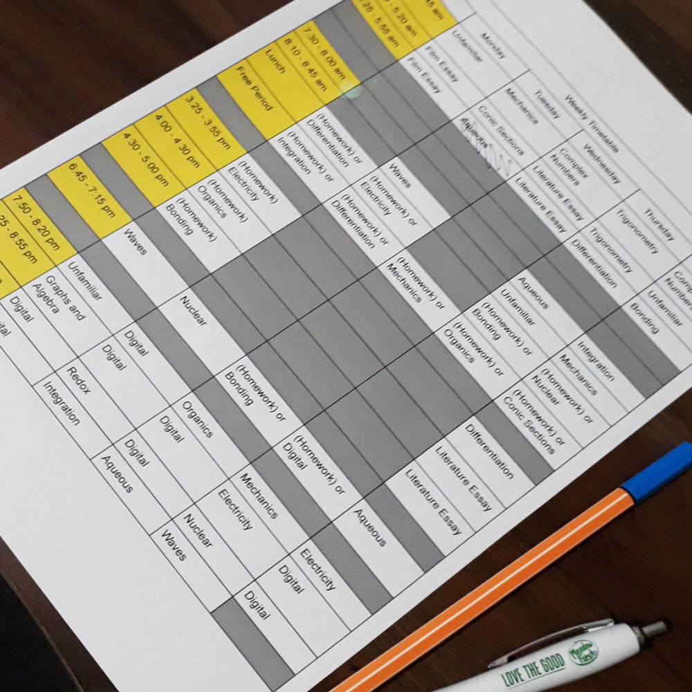
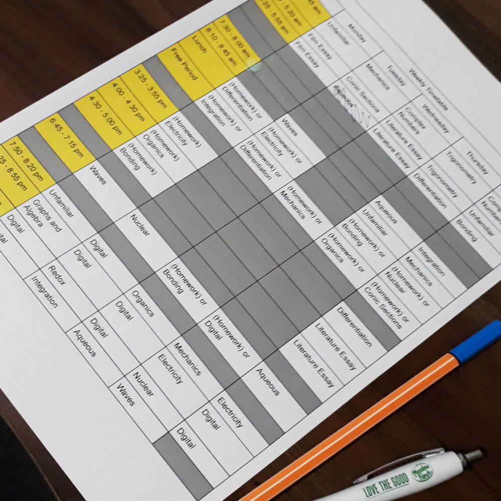

If you don't know what a learning style is, it suggests the type of revision techniques that should be the most useful for you to use when you are learning new concepts based on your personality.
Visit this link to take a quiz to find out whether you are a Visual, Aural, Reader/Writer or Kinesthetic learner.
Here are some possible strategies you could use based on your learning style:
- Visual: pictures, diagrams, colours, shapes, patterns, mindmaps, mnemonics
- Aural: listening, discussions, songs, speaking, stories
- Reader/Writer: lists, charts, notes, writing information in your own words
- Kinesthetic: movement, demonstrations, physical sensations, flash cards, games, experiences
Again, these learning styles are only suggestions of some strategies you could use in your study. Some techniques are more helpful in certain subjects compared to others as you can see further down the page.
 
